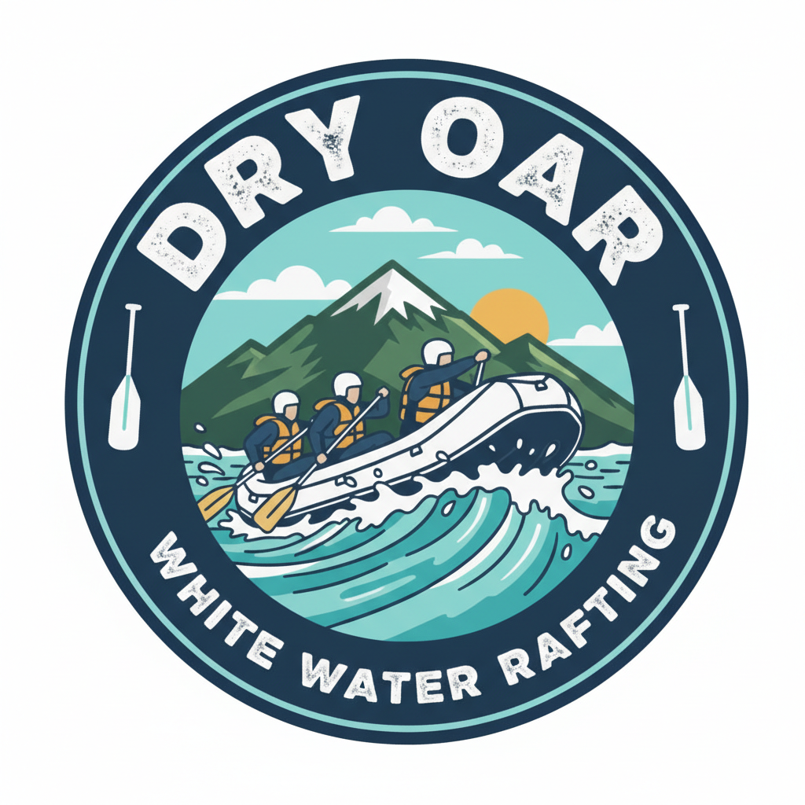

Find your perfect rapid
From family floats to drops

Salmon Run
Perfect for families and first-timers, the Salmon Run offers a gentle introduction to the world of whitewater. You’ll glide through crystal-clear mountain water with plenty of opportunities to spot local wildlife and enjoy the towering pine forests. While there are enough splashes to keep things exciting, the focus here is on relaxation, scenic beauty, and making memories with the kids.
BOOK NOW
Devils Canyon
Prepare for a heart-pounding journey through the jagged rock walls of Devils Canyon. This trip is designed for those seeking a step up in adrenaline, featuring technical Class III and IV rapids that require teamwork and precision. Between the roaring drops, you’ll navigate narrow chutes and deep emerald pools that are only accessible by raft. It is the ultimate balance of challenge and breathtaking canyon views.
BOOK NOW
Sunset Canyon
Experience the river at its most dramatic. Sunset Canyon is famous for its massive waves and steep drops that will test even the most experienced paddlers. As the sun dips below the canyon rim, the rock walls glow with vibrant oranges and reds, providing a stunning backdrop to the most intense whitewater in the region. This is a full-day, high-energy expedition for those who want to conquer the most powerful rapids Dry Oar has to offer.
BOOK NOW!